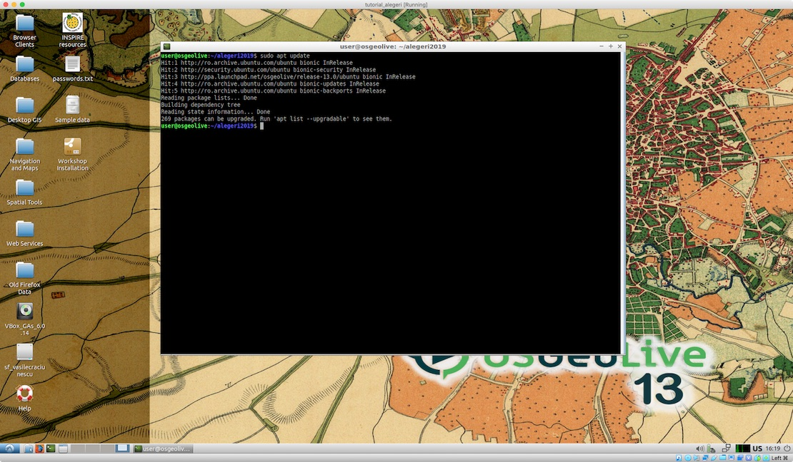

Cartografie electorală în linie de comandă - Partea 1: Mașina virtuală OSGeoLive
Ce este și cum lucrăm cu ea?
OSGeoLive este o distribuție software boot-abilă, bazată pe Lubuntu, ce poate fi pornită de pe DVD, stick de memorie sau prin intermediul unei mașini virtuale. Aceasta conține deja preinstalate și configurate o multitudine de aplicații software open source din zona geospațială. OSGeoLive este mediul ideal pentru a testa comenzile din tutorialul nostru deoare, încărcată prin intermediul unei mașini virtuale, oferă tuturor celor interesați un mediu identic de lucru. Versiunea curentă, pe care s-au făcut toate testele din acest material, este 13.0 și poate fi descărcată de pe SourceForge ca disc virtual .vmdk, specific VirtualBox, sau ca fișier generic .iso, compatibil cu oricare mediu de virtualizare. Personal, am folosit VirtualBox iar, după instalare și pornire (user: user, password: user) am ajuns la un ecran similar cu imaginea de mai jos (a se remarca harta istorică a Municipiul București de pe desktopul OSGeoLive 13.0).
Ecranul de pornire al OSGeoLive 13.0.
Comenzile, așa cum zice și titul materialului, se vor rula în linia de comandă, folosind shell-ul Bash. Accesarea shell-ului se poate face prin intermediul iconiței verzi din bara de jos sau din meniul Start/System Tools/LXTerminal (evident, în funcție de preferințe, utilizatorii pot folosi și alt shell). După pornire, ar trebui să se obțină un rezultat similar cu cel din imaginea de mai jos.
Terminalul OSGeoLive este gata să accepte comenzile dumneavoastră.
Crearea directorului de lucru
Vom introduce primele două comenzi în Terminal (după fiecare comandă se apasă tasta ↵Enter) pentru a ne crea un director de lucru (comanda mkdir) și pentru a naviga în interiorul lui (comanda cd).
mkdir alegeri2019
cd alegeri2019
Calea completă către locația în care ne găsim după executarea comenzilor este /home/user/alegeri2019, asta, deoarece, la lansare aplicației LXTerminal, locația implicită în care vom găsi este directorul home al utilizatorului curent (user).
Instalarea aplicațiilor lipsă
Explicam mai sus că OSGeoLive vine deja la pachet cu numeroase aplicații geospatiale instalate și configurate. Nu este însă cazul tuturor aplicațiilor de care acest tutorial are nevoie.
Mapshaper
O primă aplicație de acest gen este Mapshaper. Aceasta depinde însă de alte două componente software, mediul de execuție Node.js și managerul de pachete Node.js, npm. Acestea pot fi foarte simplu instalate cu ajutorul comenzii apt, parte a managerului de pachete Ubuntu (Lubuntu, cel peste care este împachetat OSGeoLive, este o versiune simplificată a sistemului de operare Ubuntu). Întotdeauna, înainte de instalarea unui packet de programe pe platforma Ubuntu cu ajutorul apt install, este recomandarea actualizării listei cu pachete disponibile în depozitele utilizate. Pentru aceasta se rulează următoarea comandă cu sudo (rulează comanda cu drepturi de administrator) în Terminal:
sudo apt update
Rezultatul ar trebui să fie similar cu cel din imaginea de mai jos:
Actualizarea listei de pachete cu apt get.
Acestea fiind făcute, se poate trece la instalarea aplicațiilor Node folosind următoarele comenzi (se confirmă răspunzînd Y la întrebarea Do you want to continue? [Y/n]):
sudo apt install nodejs
sudo apt install npm
Dacă instalarea a decurs fără erori, putem trece la instalarea Mapshaper folosind comanda:
sudo npm install -g mapshaper
Testarea instalării cu succes se poate face cu comanda:
mapshaper -v
În Terminal, ar trebui să apară manualul de utilizare a comenzilor Mapshaper, identic cu imaginea de mai jos:
Confirmarea instalării corecte a Mapshaper.